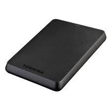

Un disco duro es un hardware que se utiliza para almacenar datos y contenido digital en ordenadores. Todos los ordenadores tienen un disco duro interno, pero también existen discos duros externos que sirven para ampliar el almacenamiento de un ordenador.